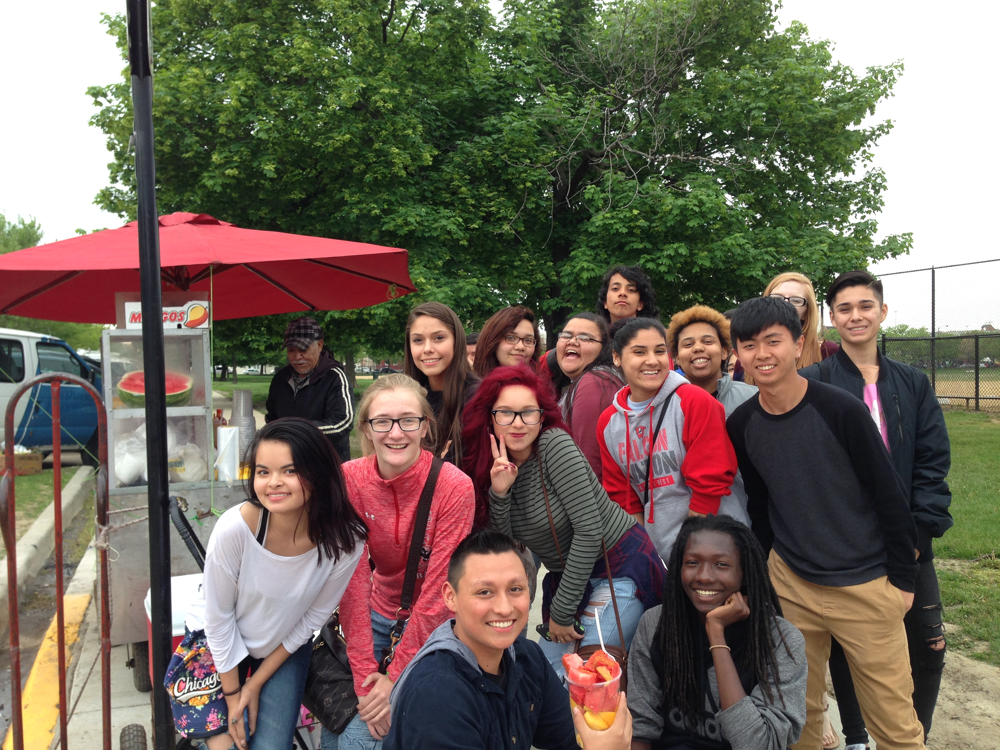
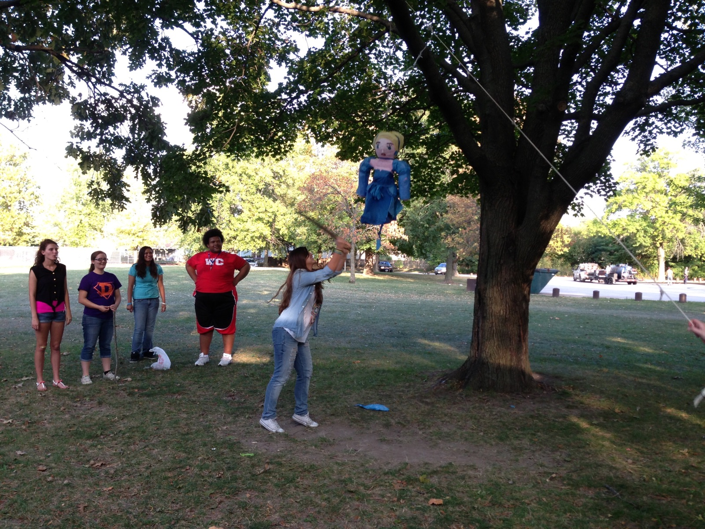
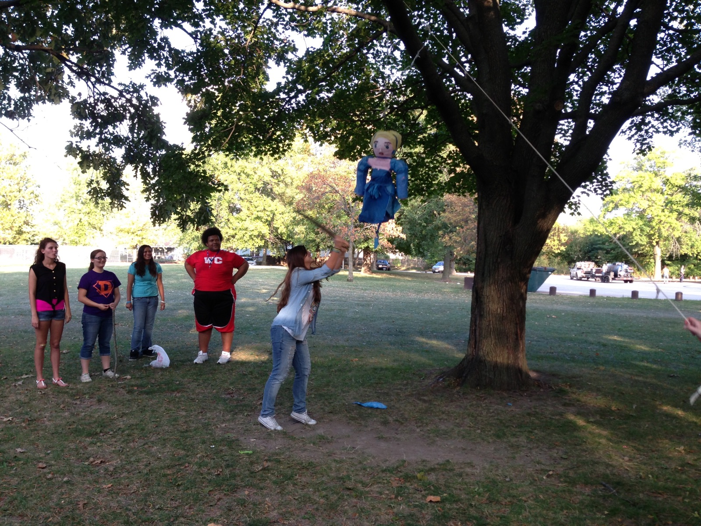
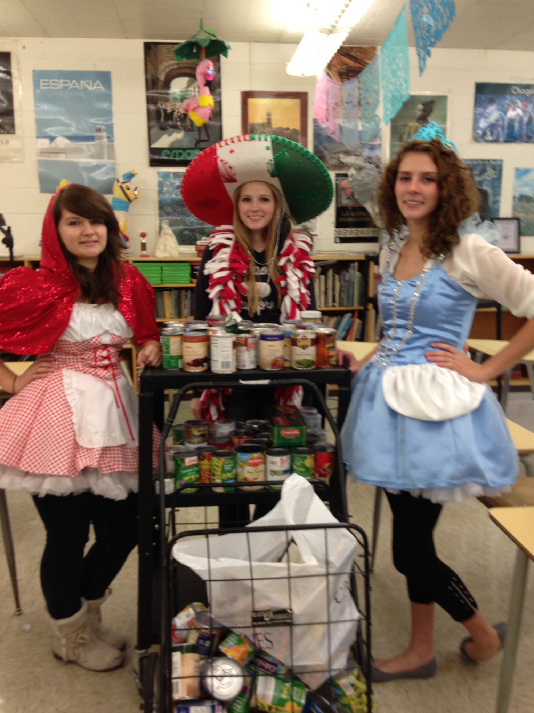

Spanish Club
Welcome to Spanish Club
Mrs. Lipnick Room 114
ABOUT SPANISH CLUB
Spanish Club is open to any student in any Spanish class or has completed at least one class. The club meets every Thursday at 7:40 a.m. in Room 114 (Mrs. Lipnick's room). Some time in September, we will have our annual Toastada Fiesta (a WHS tradition for 45 years). We get toastadas, get together in somebody's backyard (yes, a big back yard!), eat tostadas, drink pop, play volleyball, "touch" football, listen to mexican music, visit, and have some fun competition between classes (freshman, sophomores, juniors, and seniors) and generally get together.
OTHER
We have other events during the year such as pizza parties, cosmo disco bowling, a scavenger hunt, and a trip to Chicago. New ideas for events are always welcome. Basically, these events are opportunities for the nicest people in West High to get together and socialize informally.
HOW DO YOU JOIN?
Contact Mrs. Lipnick, or any other Spanish teacher here at Davenport West High School; Membership Fee is $2 and to have taken Spanish in the past or currently enrolled within a Spanish class. If you have any questions, comments, or concerns, feel free to contact Mrs. Lipnicklipnickb@davenport.k12.ia.us
Photos
 

